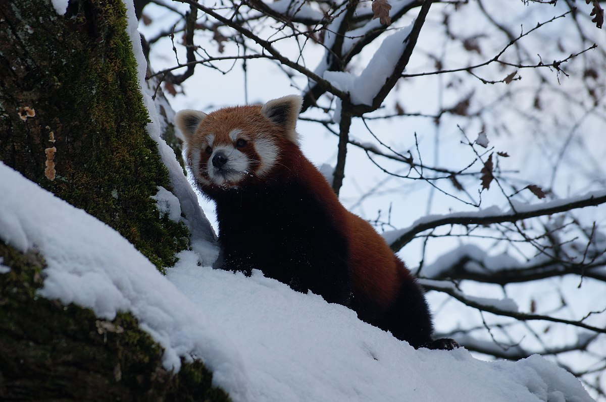

Habitat
Red pandas are typically found living in trees in the temperate forests of the eastern Himalayas. Almost 50% of red panda habitat is in the Eastern Himalayas. Red pandas live up mountains preferring high altitude environments ranging 7200ft to 15700ft. They like to live in climates of 10 to 25°C.